We designed Radio Rick for Rick, a mason at Carnegie Mellon who has worked with brick for almost five decades. At the beginning, we thought we were looking for a small assistive device to improve his work process. After talking with him and observing his work environment, we realized the better design opportunity was not efficiency. Rick already knows his craft deeply. What we could support was the long, often solitary time around that craft.
The final object is a brick-shaped radio that streams stations from cities connected to his children, including Paris and Las Vegas. It uses a Raspberry Pi Zero, an LCD screen, a speaker, Bluetooth output, and physical dials inside a laser-cut plywood enclosure sized after a standard brick.
From Workflow to Wellbeing
We first approached the project through contextual inquiry. We followed Rick outside for about an hour, stood with him in the cold wind, watched him lay brick, and asked about his daily routine, his most-used tools, the moments that slowed him down, and the parts of work he enjoyed. While he worked, he also started talking about his family.
He showed us his utility cart and tool bucket. The bucket was messy, and he mentioned that he had scraped his hand before, but he did not seem very concerned about it. It did not slow him down. He could still move through the work fluently, checking whether a brick was level with a spirit level almost immediately and making small adjustments without much hesitation.
Rick was already so fluent in his work that there was little for us to improve in the masonry process itself.
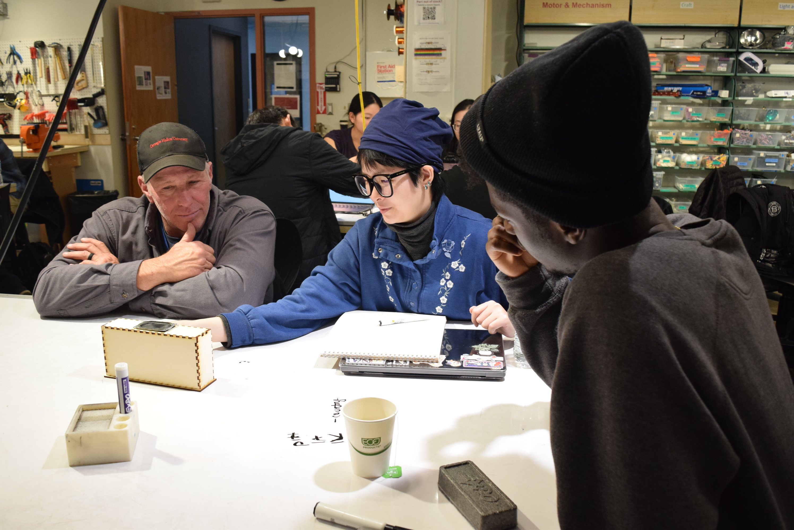
Research Insight
The unexpected part of the interview was that Rick did not urgently need us to fix his work. He was skilled, comfortable, and proud of what he did. But he also works outdoors, sometimes in difficult weather, and much of that time is spent alone. He is warm and talkative, and he often mentioned his children with a lot of pride.
Music was already part of his day. He told us it keeps him company while he works. We started to see music as something that could add a little warmth to his workday. That moved the project away from tool optimization and toward a more personal question: could a device help him feel closer to the people and places he cares about?
What we expected
A practical problem in masonry that could be improved by an electronic device.
What we found
A highly skilled worker whose routine did not need to be disrupted, but whose work day could use more companionship.
Concept
We decided to build a radio that could stream stations from the cities where Rick's children live or once lived. Instead of a random playlist, the radio would let him tune into a place. Paris could remind him of his daughter. Las Vegas could remind him of his son. We also added several ad-free Pittsburgh local stations, so he could switch back to music that felt familiar to him.
The brick shape came from Rick's own world. We kept the dimensions close to a standard brick, used laser-cut 1/8 inch plywood for the enclosure, and kept the plywood unadorned because Rick liked the plain wood look. The interface stayed physical: one dial for volume, one dial for station selection, a Bluetooth button, a power switch, and an LCD that shows both the station and output mode.
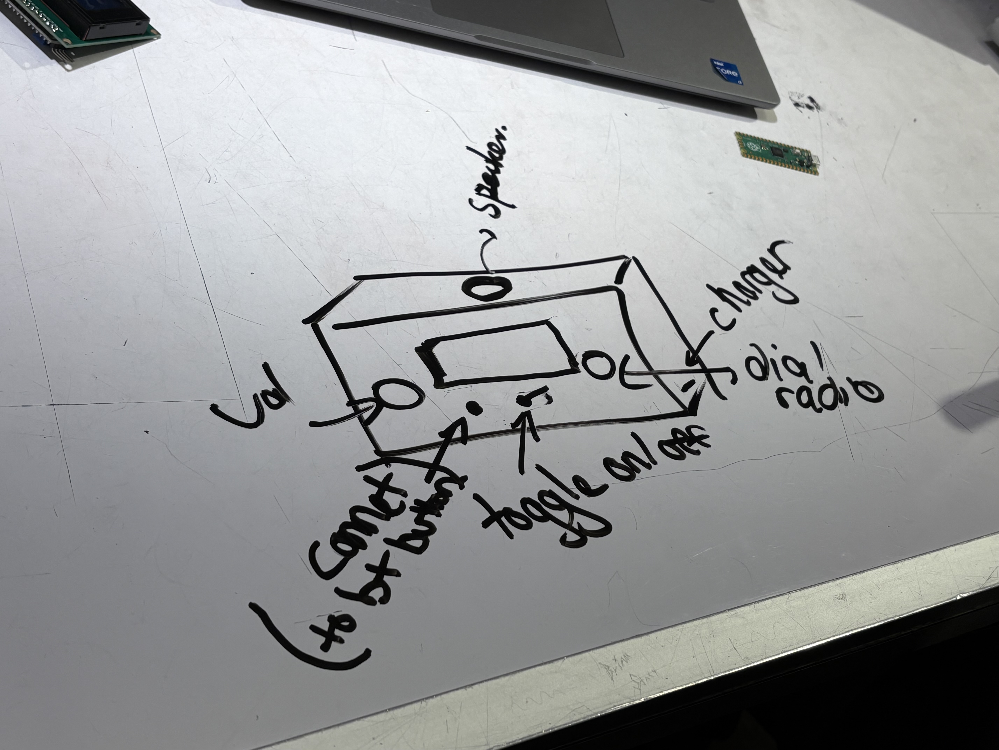
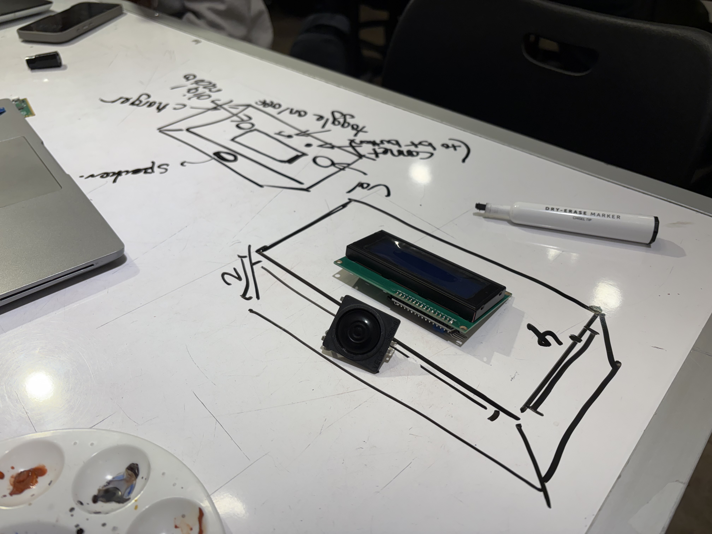
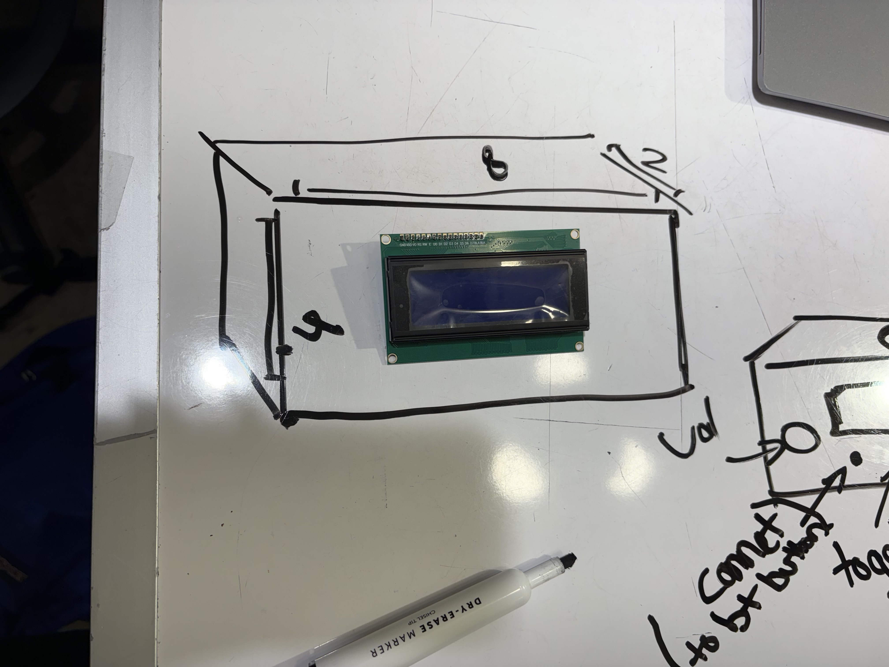
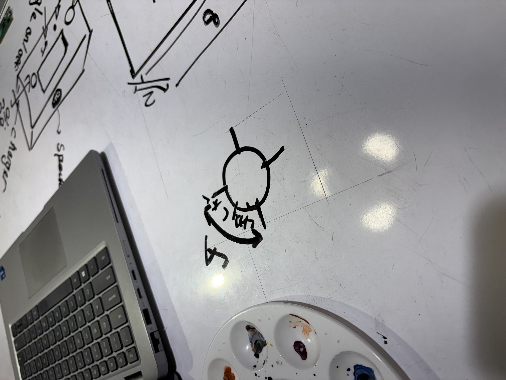
Prototype & Feedback
We made a non-working plywood prototype first, because we wanted Rick to react to the size, layout, and interaction before we spent too much time on electronics. The prototype had the main ingredients in place: two dials, an LCD, a Bluetooth button, an on/off control, and a brick-like box.
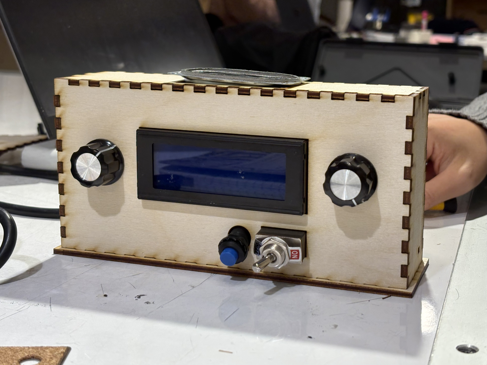
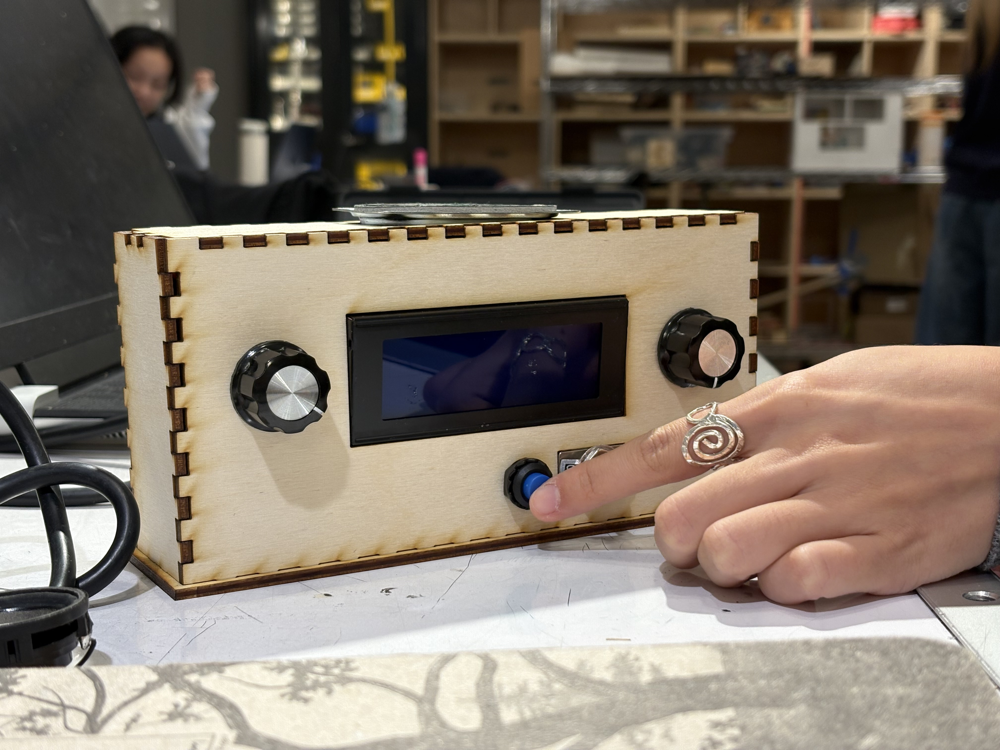
Rick liked the brick form and even preferred the plain wood over a painted finish. He also helped us see what was not clear yet: the toggle did not read as an on/off switch, and the two dials were too similar. He imagined putting the radio on his work cart or near the top of the cart window, and asked whether magnets could be added to the back.
After that feedback, we changed the toggle to a clearer power switch, added a volume pattern around one dial, labeled the Bluetooth button with an icon, and kept the natural plywood finish.
Final Product
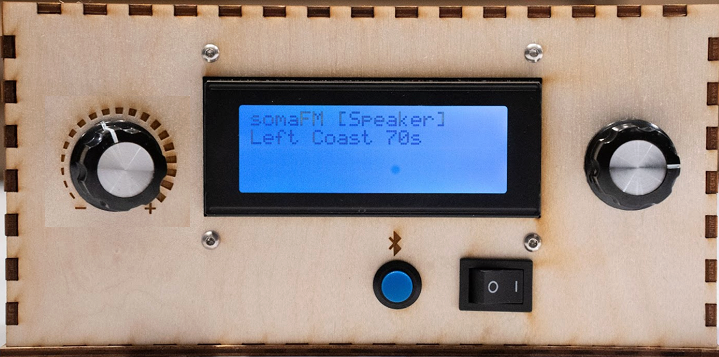
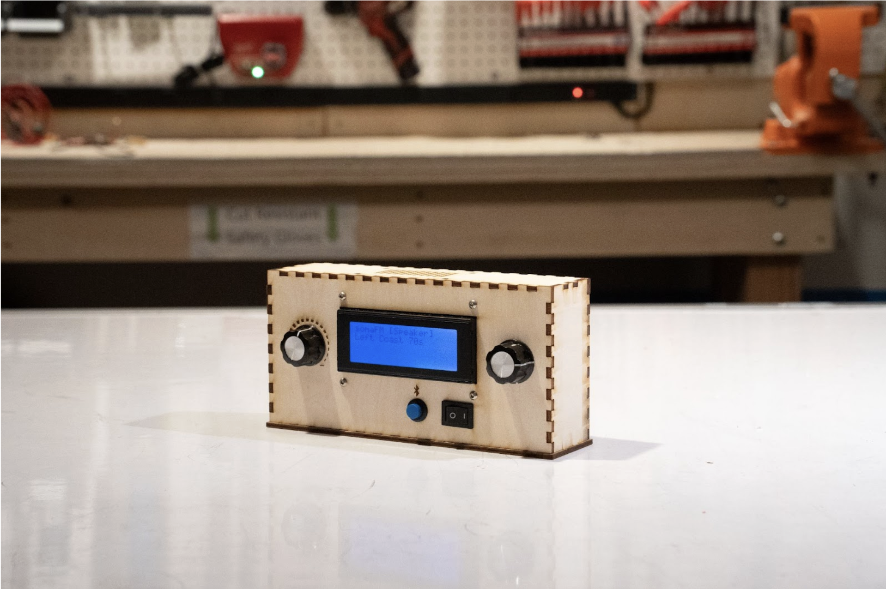
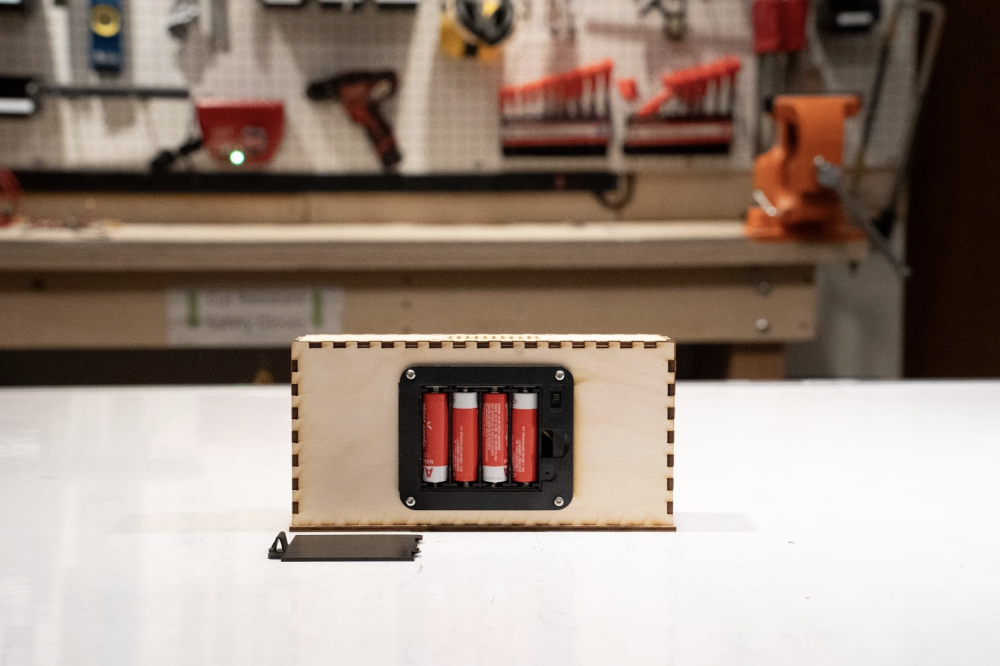

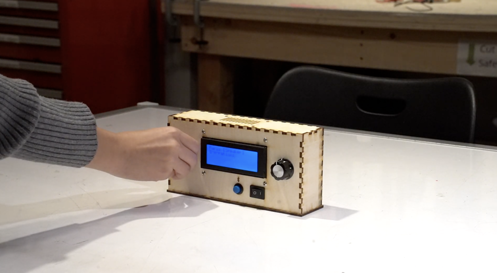
Rick gets to work early in the morning and starts his day with the radio on his cart. Instead of turning to a random playlist, he turns the station dial to Paris. The LCD confirms the station, and the sound follows him as he drives to the work site, reminding him of his daughter who once worked there.
Later, when he starts working outside, he presses the Bluetooth button and switches the sound to his earbuds. He turns the volume down so he can still hear his surroundings, then changes the station to Las Vegas, his son's city. The radio stays simple: two dials, one button, one switch, and a small screen that tells him what is happening.
Technical Pivot
We originally planned to use a Raspberry Pi Pico 2 W because it was small and seemed convenient. The problem was that the Pico could not handle the kind of Bluetooth audio and live web streaming we needed. That was a major setback because a lot of our schedule had been built around it.
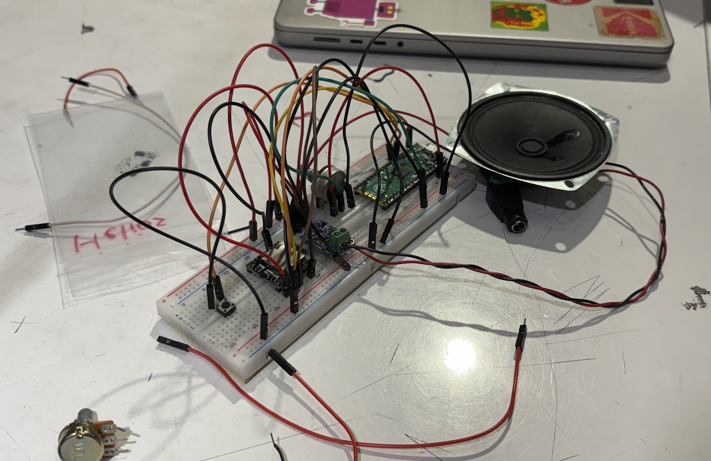

We moved to a Raspberry Pi Zero with an Adafruit Speaker Bonnet. This solved the streaming problem, but it also changed the whole build: less space inside the box, different power needs, and software that had to monitor knobs, button presses, Bluetooth state, and radio stations at the same time.
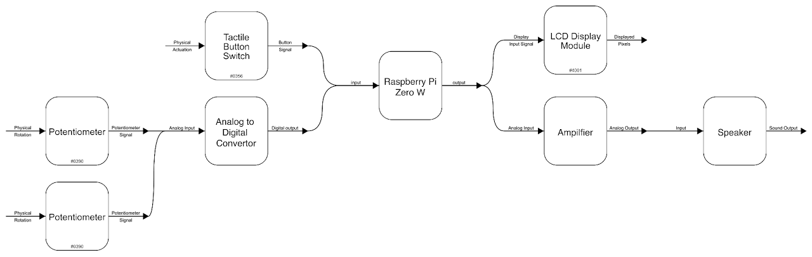
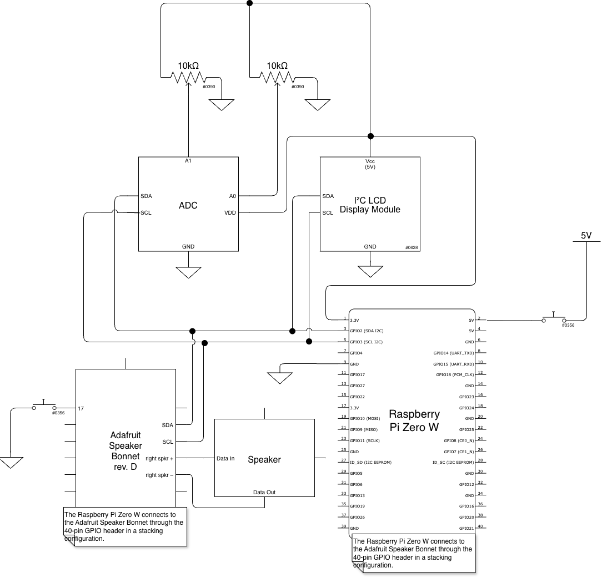
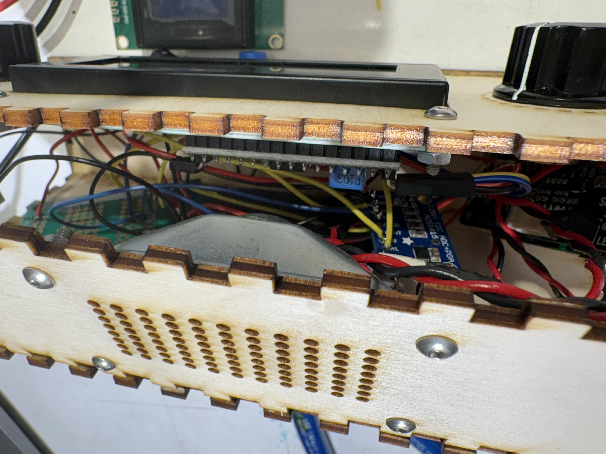
Last-Day Accident
Near the deadline, the hardware became the bottleneck again. We were still figuring out battery power, speaker clearance, and how to close the enclosure without forcing the parts against each other.
The accident was very literal: the original speaker and the LCD screen physically did not fit in the same closed box. We had hoped to keep a stronger stereo setup, but the final space and wiring made that unrealistic. We switched to a smaller, simpler speaker so the radio could close, power on, and work reliably for the presentation.
Outcome
Rick was happy with the final radio. He liked that it was the exact size of a brick, that it kept the natural wood look, and that it turned his family stories into something he could carry through a work day. For us, that was the point of the project: not making masonry faster, but making a familiar work routine feel a little more personal.

Reflection
This project taught us that user research does not always lead to a clear efficiency problem. Sometimes the more respectful answer is to leave a skilled workflow alone. Rick's masonry practice already worked because he had spent a lifetime building it into muscle memory.
The design opportunity came from listening to the parts of his day around the work: the music, the long hours alone, the pride in his children, and the places attached to them. On the technical side, we also learned to test hardware limits earlier. The Pico decision cost us time, but the pivot to the Pi Zero made the final radio possible.